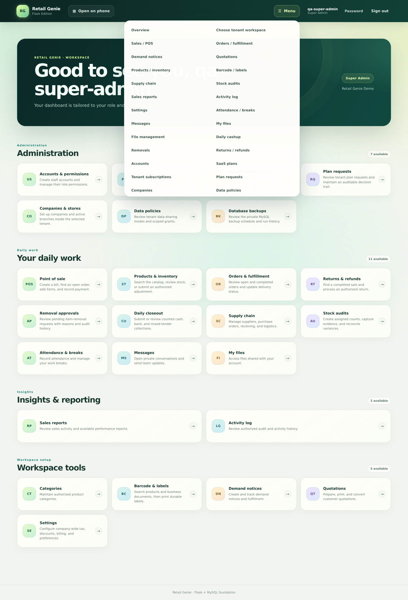
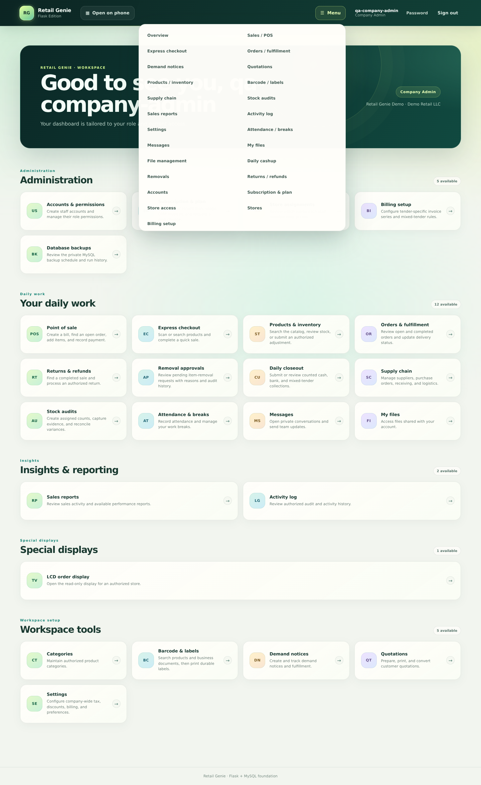
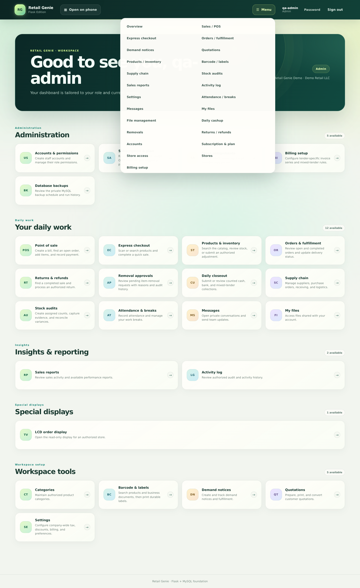
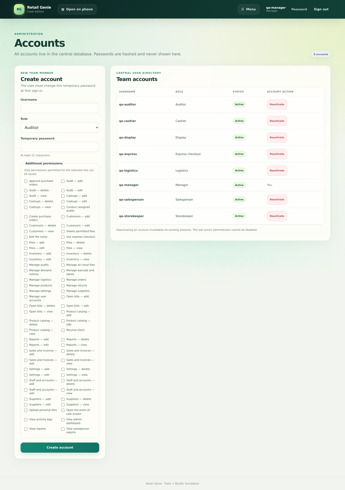
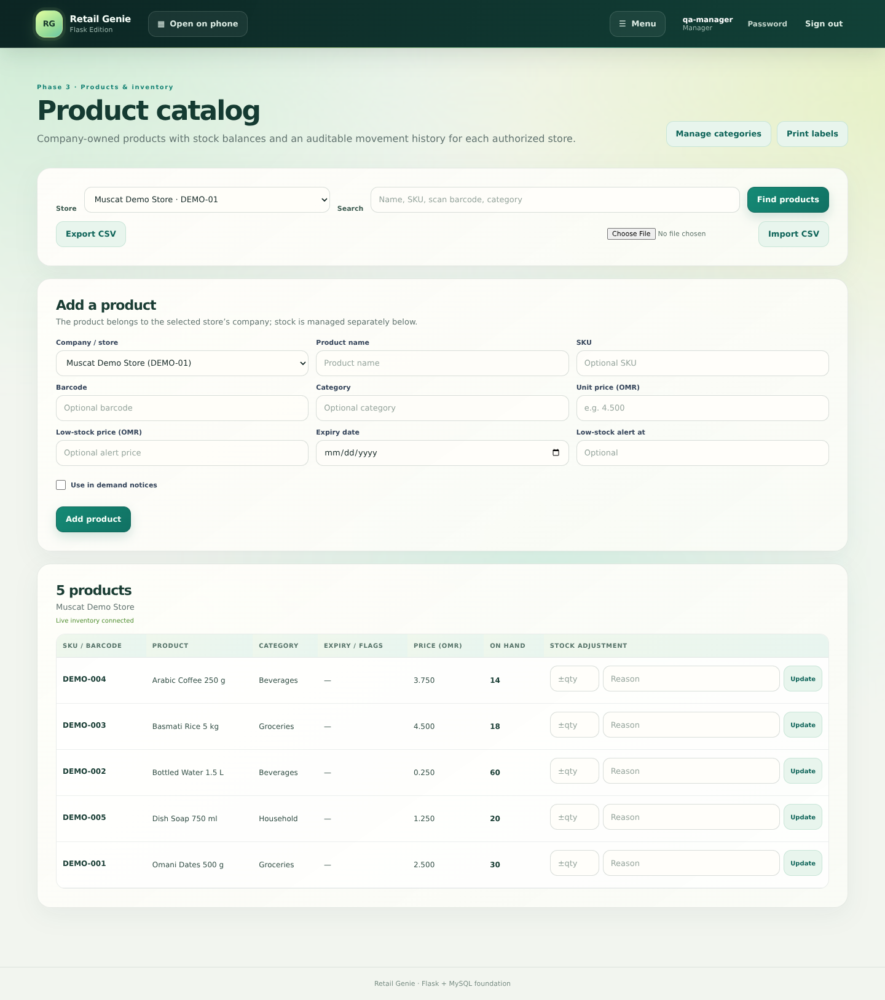

A practical guide to company onboarding, role boundaries, store and inventory setup, user access, and safe company-container operations. This file can be opened directly or printed to PDF.
Company vs. tenant container
Company is the operating business. It has its own stores, team memberships, products and inventory, sales, customers, settings, and operating history.
Tenant container is the SaaS isolation and billing boundary that holds one or more distinct companies. Companies can share a container without becoming one company. Data sharing between sibling companies follows the container's data policies; company-level isolation is the safe default.
Example: Company A and Company B can reside in Container 1 while retaining distinct company identities, users, stores, and records. A container move changes the boundary, not the identity of either company.
Main Admin, Company Admin, and Admin
Main Admin / Super Admin
Scope: platform-wide company onboarding, container and policy administration, subscription oversight, and guarded cross-container transfers.
Boundary: confirm the selected tenant/workspace before company-specific actions. Transfers require a clear preflight; do not manually edit tenant IDs.
Company Admin / Sub Admin
Scope: day-to-day administration of the assigned company, including users, stores, inventory, and permitted settings.
Boundary: cannot create or transfer companies, administer another company's container, or archive a tenant container.
Admin (legacy account label)
Scope: existing company-level administrator access for the account's active membership.
Boundary: this is not a Main Admin. Create new administrators with the current Company Admin / Sub Admin role.
Give staff roles only the permissions and store assignments required for their duties. Review access when responsibilities change or an employee leaves.
Role and workflow screenshots
These images are reference screenshots from synthetic preview data; they do not contain live customer records. Images are stored alongside this HTML guide in the preview/ folder.

Main Admin: platform tools and company/container entry points.

Company Admin: company-scoped operations and tools.

Admin (legacy): company-level account access.

Accounts: add users and grant role-appropriate access.

Products & inventory: catalog and store-level stock operations.
Add a company
Sign in as a Main Admin / Super Admin and open Companies.
For a new customer boundary, create the company and enter its name/code, timezone, first store, and initial Company Admin account. The app provisions the tenant container, company, store, and membership together.
To add a sibling company to an existing container, use the related-company workflow. The new company remains a separate entity under that container.
Verify the company and store appear in the directory. Deliver temporary credentials through an approved secure channel and require the new administrator to change the password.
Before adding a sibling: review the container's data-sharing policies. Do not enable broader sharing unless the customer has approved its scope.
Set up stores and inventory
Add each branch as a store under the correct company, using a distinct store code.
Set up the approved product catalog, including SKU/barcode, unit, category, and applicable tax details.
Record opening quantities through the approved receiving or opening-stock workflow against the correct store. Use a dated reference; do not silently overwrite balances.
Reconcile stock-on-hand with movement history. Confirm product ownership and sharing policies before recording stock across related companies.
Add users and grant least-privilege access
Create a unique account and assign the correct company membership and role.
Grant only the permissions needed for the person's job.
Assign store-scoped staff to only the stores they use. Avoid granting access across sibling companies by default.
Deliver credentials securely, require a password change if prompted, and verify the account sees only its expected company and stores.
When responsibilities change or a staff member leaves, revoke unneeded permissions, store assignments, or membership promptly.
A user account is a global identity. Membership, role, permissions, and store assignments determine tenant access; a company transfer does not create a duplicate user identity.
Move a company without merging it
Only a Main Admin / Super Admin should initiate an approved company-container transfer.
Choose an active destination container. Selecting Company A as the parent places Company B alongside A while preserving B as a separate company.
Run the read-only preflight and review the stores, memberships, row counts, and dependency blockers. Nothing moves during preflight.
Resolve blockers and reconcile container-scoped subscription, billing, backup, and policy ownership separately. Never bypass foreign-key checks or edit tenant IDs manually.
Enter the approved business reason and exact confirmation. Verify the destination company, stores, inventory, historical records, memberships, and reports afterward.
If the source container becomes empty, archive it rather than deleting it. Archival retains its billing and audit history.
Approval boundary: this guide does not authorize a production or staging transfer. Do not run a real transfer, pilot, import, backup/restore, or cutover without explicit approval and an approved recovery plan.
Before you finish
Company identity, destination container, and any parent-company relationship are correct.
Expected stores, products, stock movements, and historical records are accounted for.
Company memberships and store assignments are correct; no unnecessary access remains.
Data-sharing policies, subscription, invoice, backup, and retention responsibilities are reviewed.
Required customer approval, change-control record, and audit trail are complete.